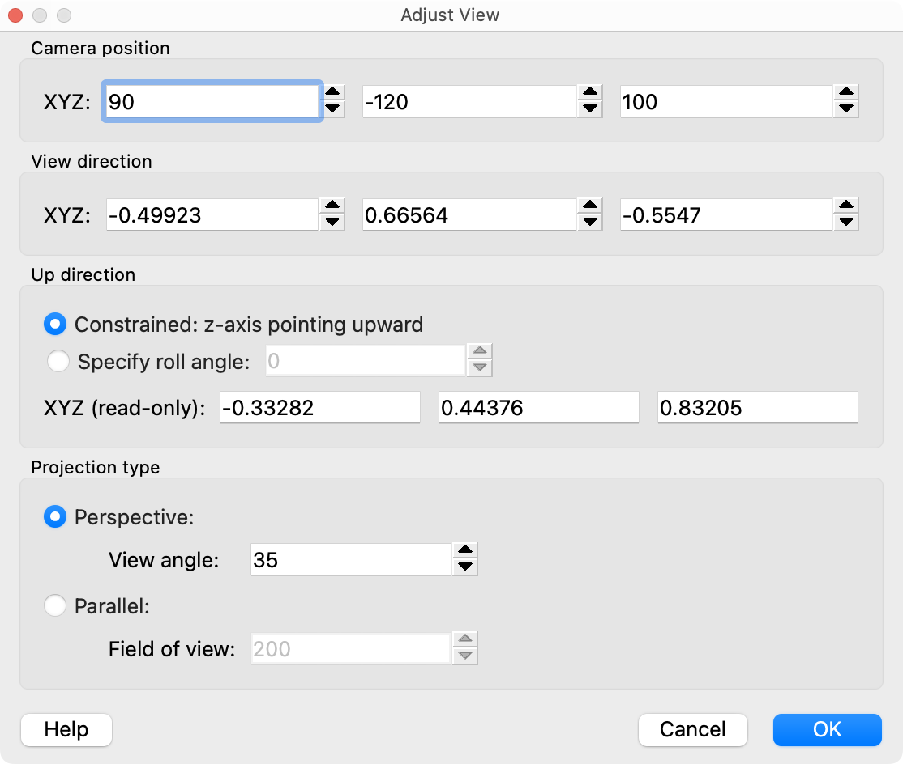

Adjust view dialog
{kind=link}
This dialog box lets you to enter the position and orientation of a viewport’s camera numerically. It can be opened from the viewport menu.
Settings
- Camera position
The Cartesian coordinates of the virtual camera in 3d space.
- View direction
The direction vector of the virtual camera.
- Up direction
The rotation of the virtual camera can be constrained such that the up direction remains always parallel to one of the three major axes of the simulation coordinate system (see Viewport settings). If you turn this orientation constraint off, you can explicitly specify the roll angle of the virtual camera, i.e., its rotation around the viewing axis.
The computed up direction is the 3d vector in the projection plane of the virtual camera that corresponds to the vertical image direction.
- Projection type
When a perspective projection is used, the vertical field of view of the camera is specified as an angle in degrees. For a parallel projection, the vertical field of view is specified in units of length.